Hello my name is Armaan. I am 11 years old.
I got on a robotics team, and we made it to an international competition where you face the top teams from all over the world.
Also, for updates on what I do next, join the journey!
FLL stands for FIRST LEGO League. In FLL Challenge, we build a LEGO robot to complete missions related to a theme. Every year there is a new theme. This year's theme is archeology, and the season is called Unearthed. We also have to develop an innovative solution that solves a problem from the real world on this theme and perform a Robot Design presentation. You will present the Innovation Project and Robot Design in a judging room. FLL Challenge takes lots of preparation and you start with qualifier competitions that can get you to provincials and from provincials to post-season, international events.
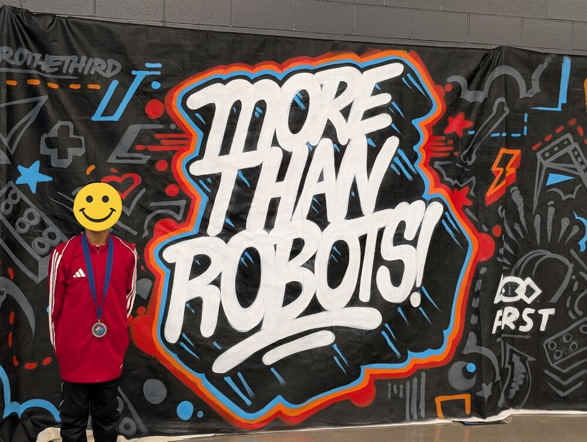
I went to a robotics camp where we learned about LEGO Education SPIKE Prime kits and building robots. A SPIKE Prime kit is the same kit that we would later use for our LEGO robot in FLL challenge. At the camp, we built robots using the SPIKE Prime kits. This taught me how to use these SPIKE Prime kits early on.
Soon… My dad and I found a center called Code Ninjas. The center ran coding classes with belts like martial arts. I began these coding classes, and I was going once every week for two hours.
Then I found out about FLL Challenge. I was looking for an FLL Challenge team, and it turns out that the Code Ninjas center I was going to had an FLL Challenge team! So of course I applied for the tryouts. At the tryouts, we were split into pairs and given all the missions from last year. Last year's season theme was Submerged. The task of the tryout was to choose one mission from the Submerged Robot Game, build a robot to solve it and then present it to everyone. I was a little nervous in the tryout, but it felt nice to try to solve one of these LEGO missions. A month after the tryout, we got notice that I had made the team!
Soon, it was the first meeting. There were supposed to be three teams, but they hadn't separated us into teams, so we all met as one very big team. We discussed ideas and everyone got homework, which would contribute to the team. This homework would include brainstorming mission solutions and innovation project ideas. This continued for the next couple meetings until we got this season's mat and LEGO.
The mat is where the robot does the missions. There are two home areas where the human players (a.k.a Technicians) can send the robot from and it will do some missions, then return to the home areas so the humans can send it again. The missions are made of LEGO, and every year there are different missions. We immediately began building the missions and setting up the mat. We began working on our Innovation Project and Robot Design. This theme for this year was archeology, so we began researching problems that archaeologists were facing.
Further into the season they finally separated us into teams. I was on the younger team with three girls and two other boys, one of which was my partner from the tryouts.
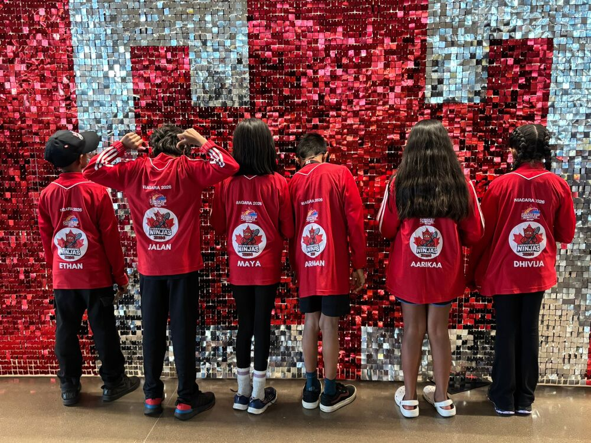
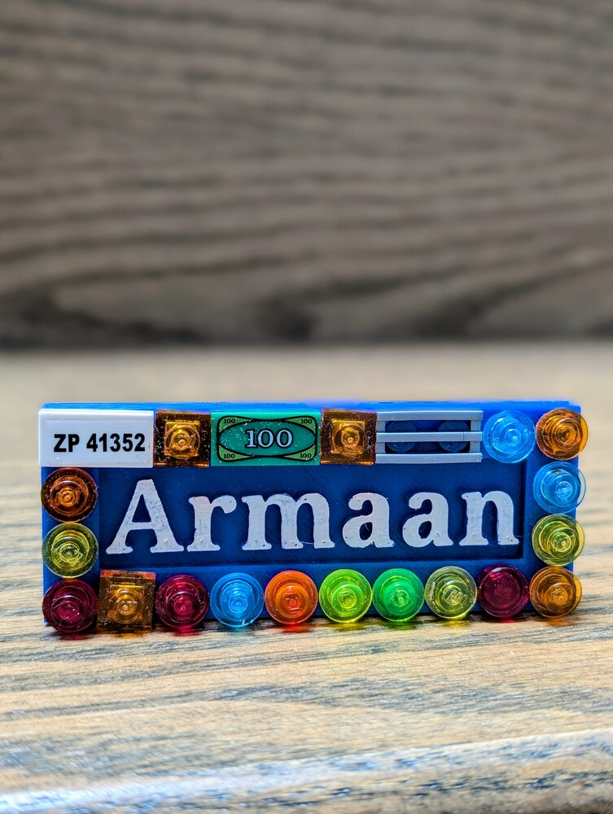
We built a robot that could drive around but did nothing. We decided to work on that later. Because we had to perform the Innovation Project and Robot Design in a judging room, we made a script that we had to memorize with songs and dances to impress the judges.
The Innovation Project we came up with is The Gas Guard. Basically, the problem is that archeologists get hurt in caves very often because of dangerous gasses or falling rocks. But if the archaeologists already know what dangers are in the cave, they can enter the cave prepared with gear for any dangers in the cave. The Gas Guard is a rover and drone system that would fly into the cave and check for artifacts, dangerous gasses and falling rocks. Then it would send this information to the archaeologists through an app, so they would have all the data on the cave saved on a device.
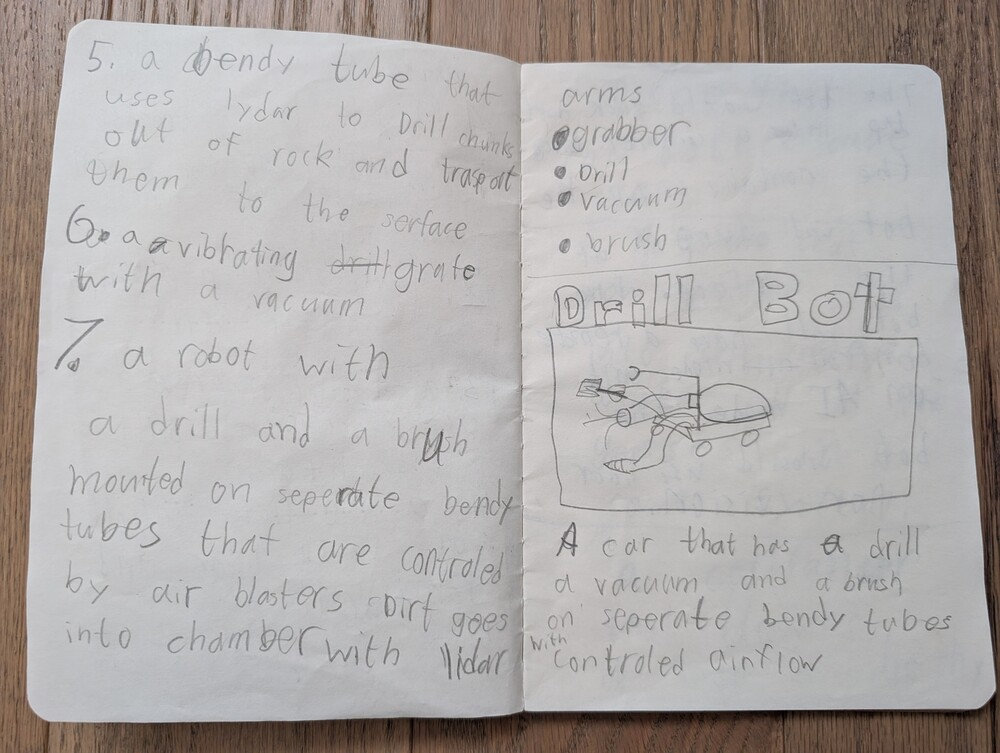
The Robot Game has 15 missions on a mat. You make a robot to try and solve these missions. For example, one of the missions might require you to flip a lever and release some LEGO rocks. Most of the missions include grabbing items the robot brings to the human players (or Technicians). These items will then be used in another mission for more points. You do not have to do all the missions, but each mission gives you points. Your points are how you rank in the Robot Game part of the competition.
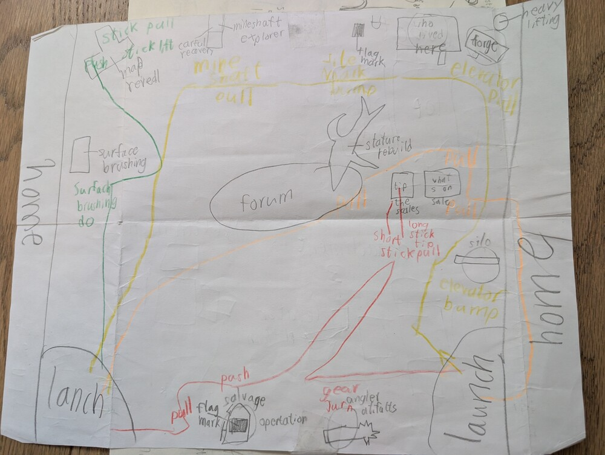
The Robot Game has a maximum number of points if you complete all the missions (the maximum is 545 points for the Unearthed season), but most robots aren’t built to do all the missions. If a robot isn’t built to do all the missions, it will have its own possible maximum points. For example, in qualifiers our robot was not built to do all the emissions, so our robot’s maximum is 460 points. Later in this post, I will say something like we scored 370/460 or “370 out of our maximum 460 points.”
We realized that our robot was having trouble moving around the board, even without arms to do the missions! It was so big that when it tried to move it would bang into the missions and get stuck! So, we scrapped the robot and built a new box design. But instead of having arms that could do missions attached to our robot, we had “attachments” that were frames with tools that would do the missions. We put these LEGO frames on our LEGO robot and the robot was just used to move the attachments around.
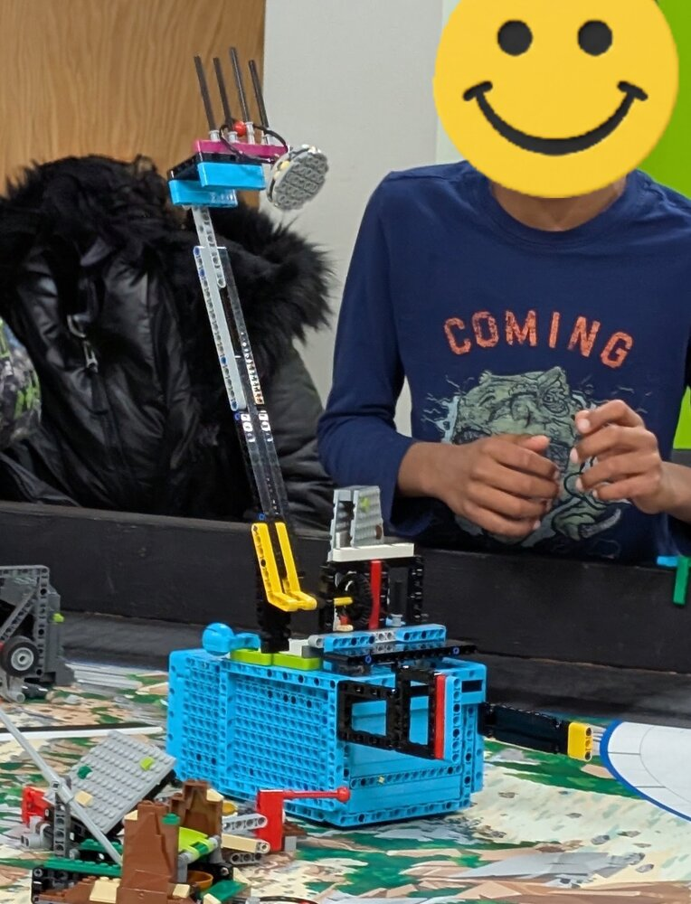
Over the next few weeks, we would practice sending the robot to do its runs and our judging presentation. We would meet once or twice a week. I thought we were making nice progress. I would basically have something related to my team to do every day, which kept me thinking about my team and kept my productivity up.
Everything was going smoothly until the worst possible thing happened. I realized I had a vacation to Japan scheduled right near the competition. It was fine, I knew all my lines. But then the team completely changed the script while I was on vacation. How was I supposed to memorize a script so fast? I felt overwhelmed. But with 5 days of vacation left until my lines needed to be memorized, I frantically memorized my lines on a multi-hour Shinkansen (bullet train) ride. The problem was, our script for the judging room had songs for us to sing. But I wasn't able to memorise the songs in time. So I just had to wait and hope that it would be okay.
When I came back from my vacation, I was given one more day to memorize my lines. The problem was that the meeting ended at 7:00 p.m., and school the next day started at 8:45 a.m., and the next meeting was right after school, with no gap. I stayed up until midnight memorizing and then I woke up at 5:00AM to continue memorizing. Even when I did that, I only had 6 hours in total to memorize 13 songs! I worked during car rides and at home! In the end, I managed to memorize everything and we got fully ready, just before competition.
It was competition day. We thought there might be other very strong teams, and we didn’t expect to win, but the atmosphere of the pits was filled with excitement and joy. We started with a practice robot match. In the robot match we messed up and got 115 points out of the 460 points that was our maximum. If we got this in a real match, then it would be really bad, so we needed to get better. Next was our judging session, where we would do our Innovation Project and Robot Design presentation. It would be the hardest part of the whole competition. Then we went to the judging room and did our presentation. The judges said it was the best thing they had seen that day! We felt excited that we may actually get an award. Moving on, we did another practice match and got 285/460 points. This was okay but soon we would have 3 official matches, and we needed to get better.
Our first official match hit 305/460 points. This was great, as it brought us to 2nd place in the robot competition! Our next official match scored 365/460 points and brought us to first place! Then the tension only grew as we got 385/460 points in our final official match and secured our first-place position in the Robot Game!
The last part… closing ceremonies. We got three awards: Robot Performance 1st Place, Innovation Project 2nd Place and Champions 2nd Place. The Champions`s award is the overall score award, which means we scored 2nd place of all the teams in the competition. None of us expected awards at the start, but when we came Champions 2nd place we were so happy.
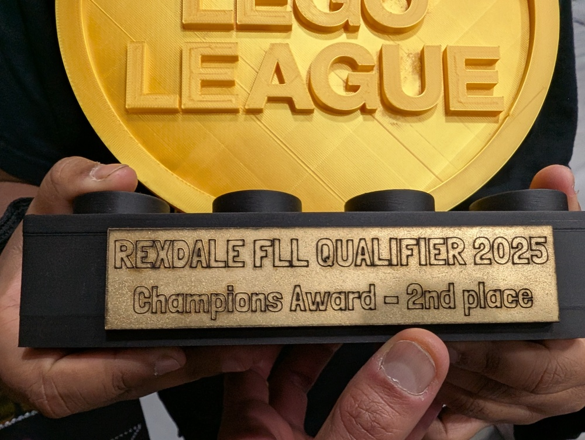
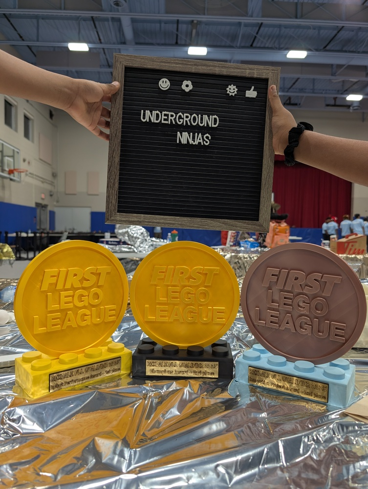
Then they announced who would be moving on to provincials, “The teams that are advancing it to provincials are… team 71106,...” and we went crazy, because that was us. Team 71106 Underground Ninjas. It was amazing and I felt proud of myself and the team for getting to provincials.
We needed to improve because we were going to provincials. We thought we were good on the robot side, so we focussed on the Innovation Project and Robot Design. The problem was that most of us were forgetting our lines and fumbling. We couldn't go to provincials like this! We began preparing our project for the competition, but we just couldn't get it right! During meetings we were not getting much done. Provincials were coming in 4 days! In the last practices, we met every day for the two weeks before provincials. In the last 4 days we locked in and memorized our lines, preparing ourselves for provincials.
The room was much bigger than in qualifiers. The room was filled with chatter. But when we went to do our robot runs, we found that the tables had some alignment issues. We scored 100 points in our first practice out of our max of 460 points. Then we proceeded to get 150 and 120 out of 460 in our other practices. Next up was an official match so we needed to get better. We scored 170/460 in that match.
Next was judging, so we got ready and went to the judging room. We did decently in our judging session but in Q & A the judges asked very technical questions, which the team was not prepared for. We felt disappointed that we didn’t do that great, but we needed to hurry up because next we had two more official matches. We scored 190 and 210 out of 460 in those matches. We clearly didn’t do that great in the robot runs so we thought our season might be done, and all we could do is sit and hope.
Then we went to award ceremonies. We had tried our best in the provincials but the other competitors were strong, so we got no awards.
Our season was done.
We did not advance from provincials, so we thought the season was over for us. But then a couple of teams said they could not make it to post season events, such as the Canada Cup, so FIRST Robotics Canada looked for more teams. We were next on the ranking list, so we got invited to Canada Cup.
Our season wasn’t done after all!
In our next meeting the atmosphere of the room was filled with relief and excitement. Even if we didn’t do well, making it to the Canada Cup would be a significant achievement. We were just overjoyed that we could get to compete at a post season event.
But if we wanted to do good in well at the Canda Cup, we needed to up our game! We worked hard to change our maximum points to 515 and make our presentation a lot better. We didn't expect an award but were feeling confident. We memorized and planned and even added display boards to our Robot Design presentation!
Previously we would hold attachments during our presentation. But the team would fiddle with them, so we switched them out with display boards. It was hard to remember when to hold the display boards up, but they were fun to use. The display boards showed things about our presentation, and we would hold them up while others were talking about the information on the display board. We thought we might have a chance, so the team was filled with hope. We practiced and practiced every day, until the Canada Cup.
We drove to Niagara. Me and my family were staying in a hotel and two of my teammates were staying at another hotel. But the other 3 of my teammates were staying at an Airbnb with the coach. We were all excited for the competition, and we thought we might have a chance. The team was going to meet up at Brock University, where the Canada Cup was being hosted.
At Brock University we were planning to spend most of our time in one building. But when we arrived, the one building was huge! There was grass on the roof and the atmosphere sparkled with excitement.
We went to set up in the pits. The pit is where you have a tri-fold board with information about your project, robot and team. People from other teams can come and see it. Many teams also give out things at their pit. These would include pins, candy and much more!
The pits were in a giant gym with multiple basketball courts beside each other. There was a floor protecting mat covering the whole floor which gave off renovation vibes. The basketball nets had retracted into the roof. There were long, black segments of pipe-and-drape set up to split the room into "aisles". In each aisle, there were smaller separators to split the aisle into pits with a walking area. It felt like the times your school sets up a fun fair and there are booths everywhere. There was even a walking track above the pits where you could see all the pits. Each pit was empty with a number. Each team was assigned a number.
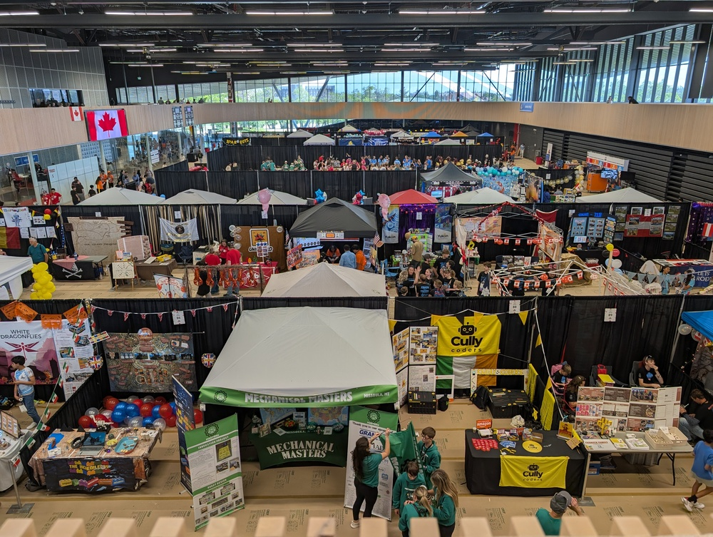
We went to our pit with our number 71. The pit looked bland and empty. We brought in a table to put the tri-fold board on. We had a couple of models around, including a rover which represented The Gas Guard (our Innovation Project). We temporarily put an archaeologist hat on the rover. I thought it brightened the mood. We also had a cave made out of a tent covered in brown construction paper for our Innovation Project.
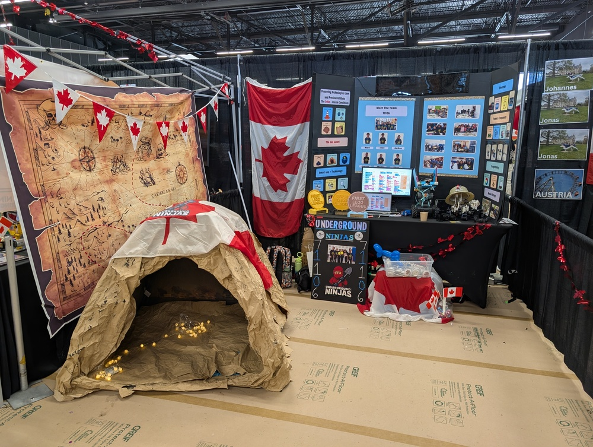
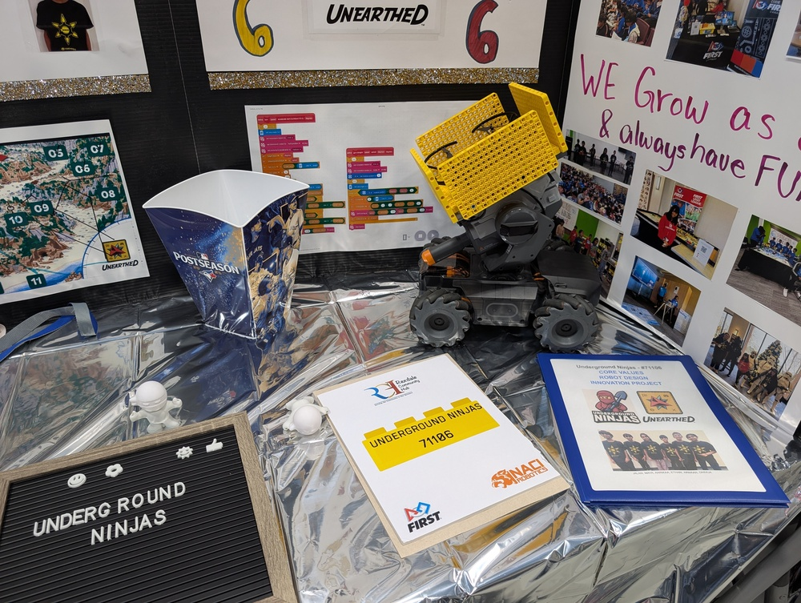
We had bins of pins with the team logo on top of a Canada flag on them to give out to anyone who came and checked out our pit. We also had chocolate eggs and mini canada flags to give out. Other teams would give out pins, and me and my teammates would have fun trying to collect all the team pins. Some teams were unique: there was a team giving out lemonade and a team giving out bookmarks. It was really fun to meet all the teams from across the world and learn about their robot, project and culture.
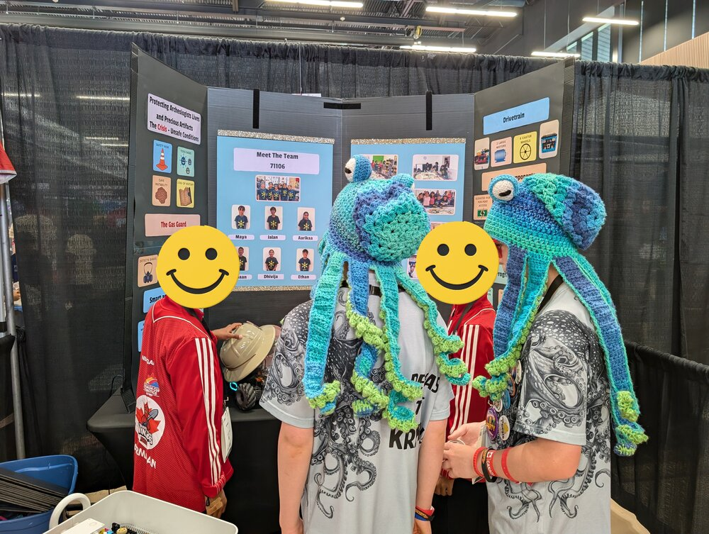
Then we started with opening ceremonies. We sang O-Canada and introduced all the countries. There were 97 teams from 23 countries. This showed me what it really meant to be invited to the Canada Cup. There were only 20 Canadian teams who got to go to the Canada Cup. It was an honour to participate in this extraordinary event.
We also had practice tables. A practice table is when you get to go to a table with your robot and practice your robot runs. We had practice runs scheduled within short amounts of time from each other. After that, we went to the Airbnb to practice our judging presentation.
We woke up and went to the pits. Today I was kind of nervous because today we had our robot matches. We started with our practices and scored 280 and 340 out of our new 515 max points. This was better than our provincial scores, but this was the Canada Cup and we needed to get better before our official matches. I was nervous that we would not do well.
Then we had our official matches, where we scored 290, 395, 260 and 290 out of our max 515 points. This brought us to spot 46 of 97 teams. We had no more matches so that meant that we would not get the Robot Performance award. The team was disappointed, so we decided to focus on Core Values.
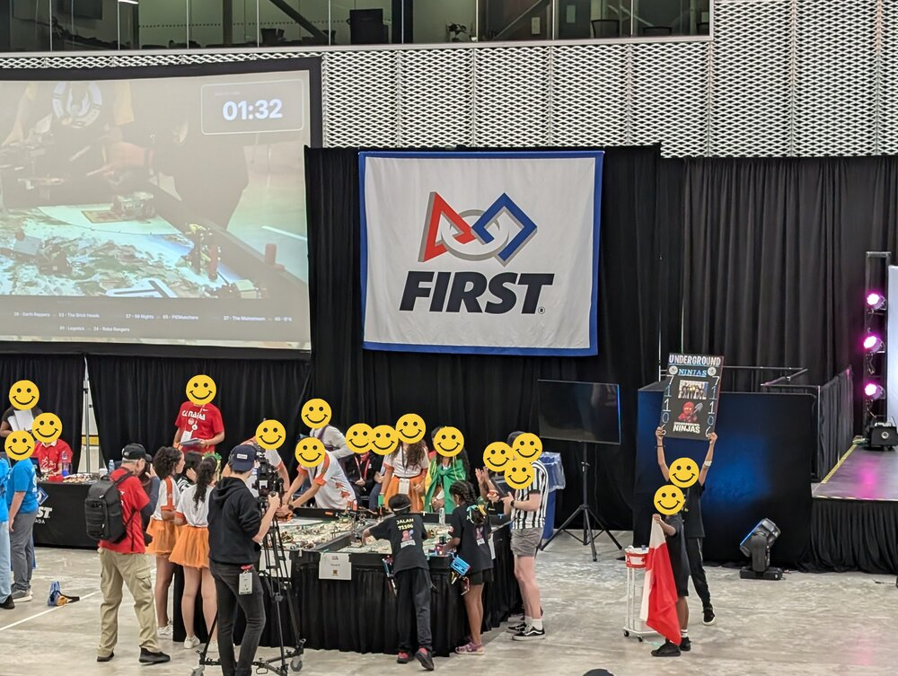
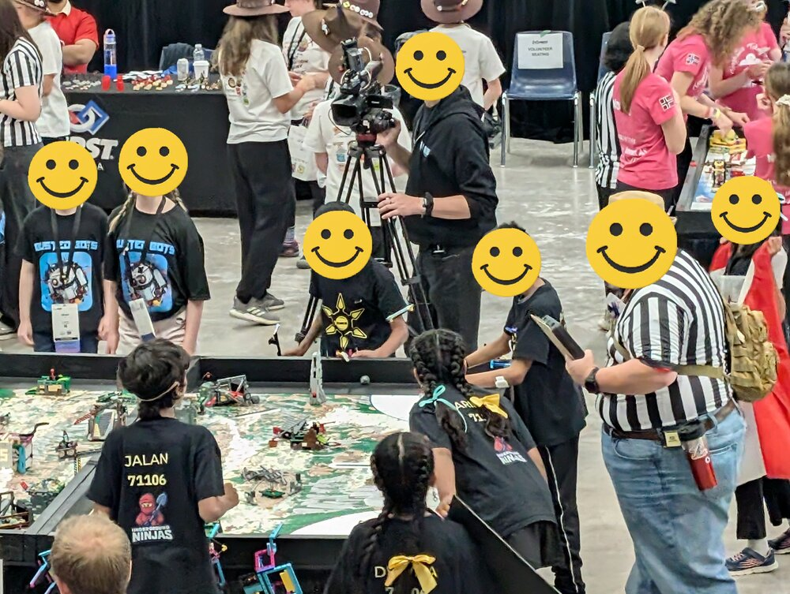
After that, we stayed at the pits to meet other teams and give away pins.
At the end of the day, we got to go to a carnival. It was really fun, and there were these double-sided bouncy castles where you race someone in a bouncy obstacle course. There was also popcorn and cotton candy. I got popcorn and my dad also got popcorn for me. I just kept doing the racing bouncy castle over and over again with my teammates and it was really fun.
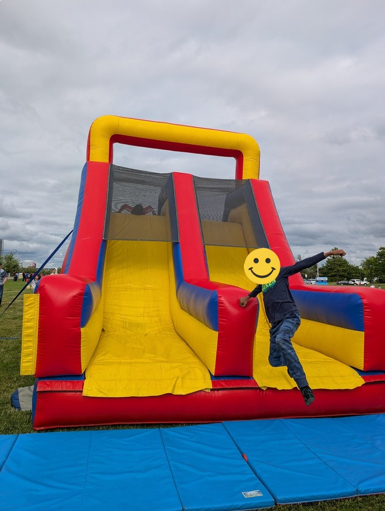
Our judging was the next day, so we then left to get to the Airbnb to practice our presentation again. I was very nervous because judging is the hardest part of the day, and we needed to bring a world class performance. All of the parents and mentors came and sat with us to give us feedback about our presentation. It was a little stressful having your parents watch you, but we needed the feedback.
First thing in the morning we had judging. I was really nervous entering that room, as 75% of our overall score depended on this one moment. If we preformed poorly in judging, we would not get any awards. We had a few mistakes, but the judges said that we were a rising star, and that they thought we would do well next year.
We were very excited that we might get an award. Because if the judges said we did well, we might actually have a chance. We stayed at the pits for a while, periodically going to practice tables with our alliance partner. I felt relieved that the hardest part of our day was over.
Now might be a good time to mention that in our pit, our sister team was on our right, and our alliance partner was on our left.
Next, we had alliance matches. Our alliance partner (Les Robots) was from Austria. Their robot, whose name was R1 (robot 1), was a small compact robot, with large attachments that could do things from far away. This let their robot do missions without moving as much. They were a top scoring team. In our alliance matches with them we scored 505 and 510 out of 545 (our combined maximum).
At the end of the day, we went to Niagara Falls in a bus. I liked the fact that we got a trip every day after we did hard work. We started by walking by the falls. There was a rainbow just hanging above the mist clouds of the waterfall. It was just so mesmerizing. Next, we went go-karting. We were supposed to do 4 laps, but my dad hugged the corners, so I got to do 5 laps. It felt nice to race along the tracks.
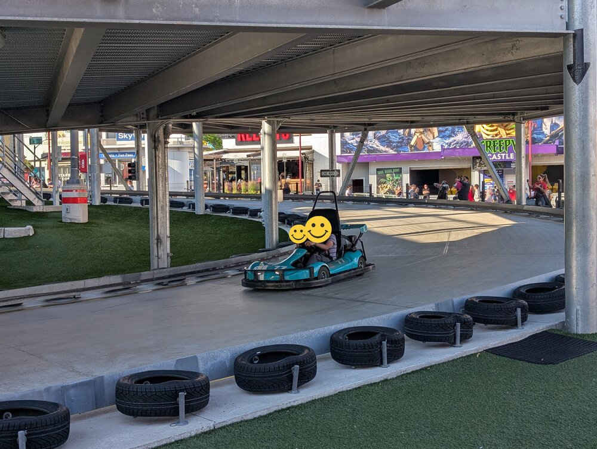
It was getting dark, so we got slushies. I got a watermelon and blue raspberry and I mixed it together! Then we went to an arcade. The arcade was nice. It had a really fun, first-person shooter game, called Halo. At the end of the day, I was sad we had to go because we were having so much fun.
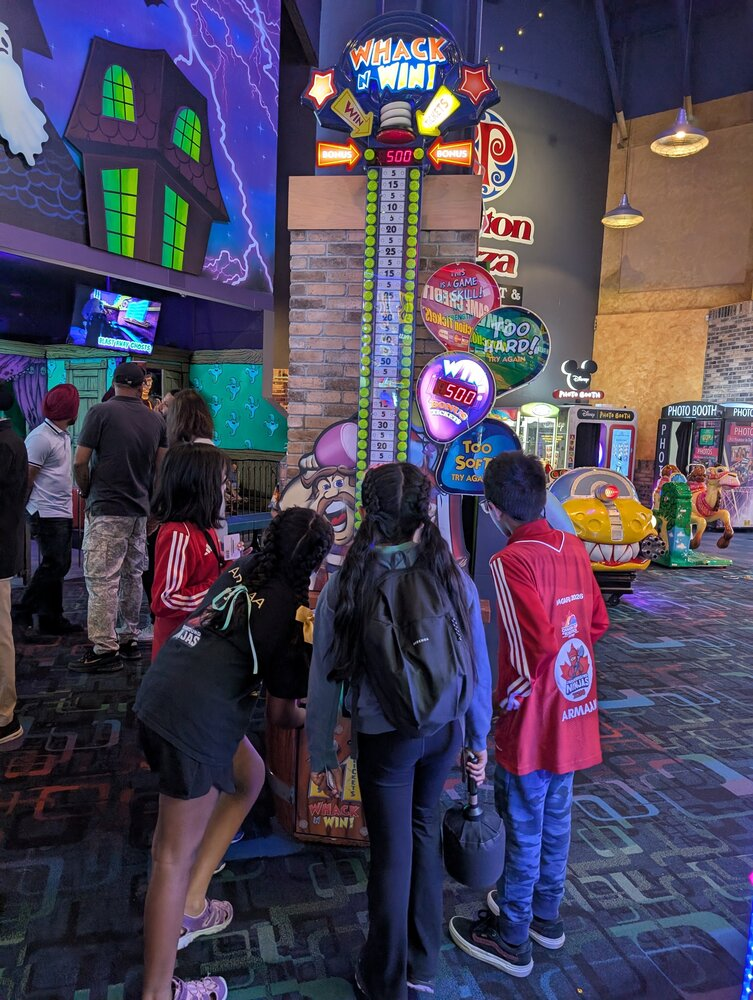
We started with award ceremonies. We actually thought we might get something. Every time an award came up we would hope they said it was for us, but they never did. We were feeling a little disappointed about the results, but we tried our best! Maybe next year?
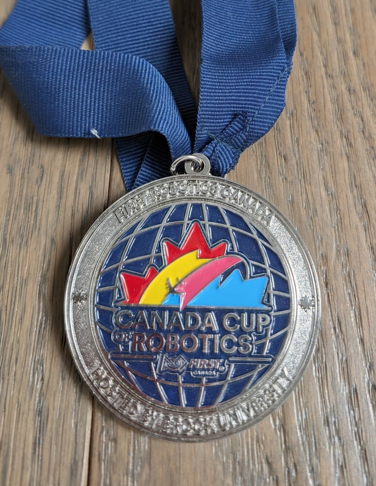
Our alliance partner also got us some gifts, which are chocolate wafers from Austria (the place they come from).
We took some pictures inside the building, and I was feeling sad it was time to say goodbye. But then we were all going for lunch, so we decided to meet up together at a Boston Pizza for one last lunch together. We had fun chatting there, but soon it was actually time to say goodbye. Everyone left, one by one, and I was feeling really, really sad. Why couldn't we have stayed longer?
When I started FLL Challenge, I had no presentation skills. When I had to memorise or present, I would feel nervous and try to avoid it in every way possible. Throughout the season I have learned presentation skills and discovered a hidden talent I had of memorization. Now if I need to memorize, I feel confident and can get the job done. I also learned more teamwork skills while working with my team. Plus, I learned how to work under pressure because nearing competition there is tons of pressure to do well and we need to work well during those times.
This is just the beginning, I will participate next year and maybe even try FRC soon.
If you would like to follow me explore the world of coding, then join the journey!